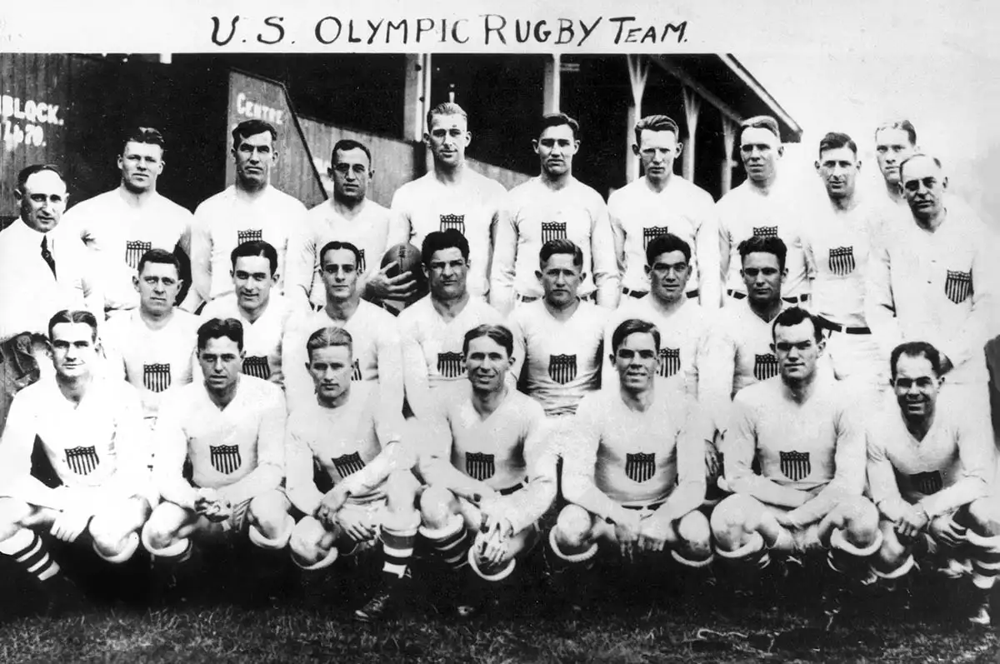
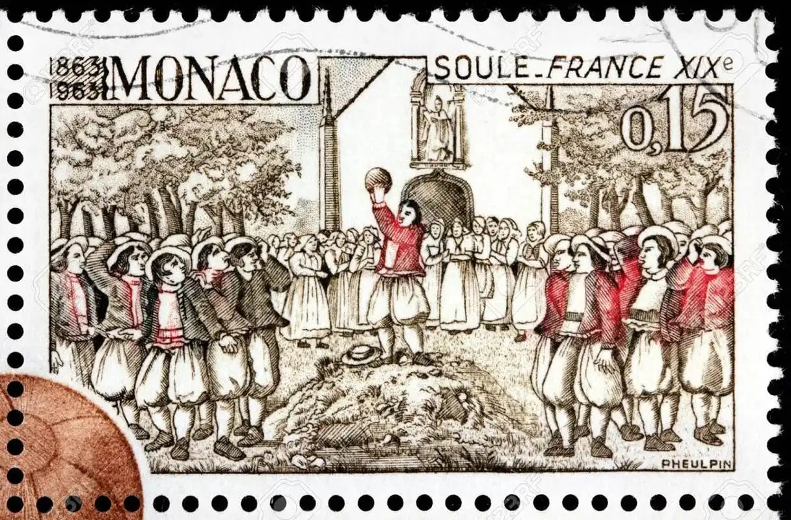
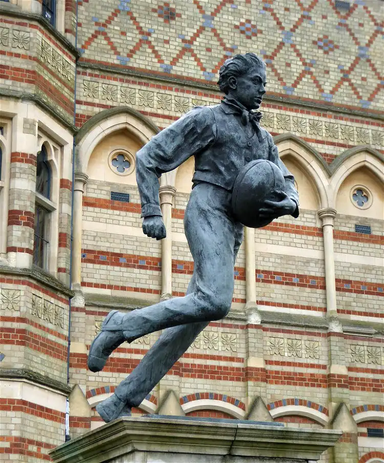

D'où vient le rugby ?

On dit que le rugby est né à l'école de rugby du Warwickshire, en Angleterre, en 1823 lorsque, lors d'un match de football, William Webb Ellis a décidé de ramasser un ballon et de l'accompagner.
Bien qu'il y ait très peu de preuves à l'appui de cette théorie, le trophée de la Coupe du monde de rugby porte désormais le nom de William Webb Ellis. Cette même année, le tout premier match international a été disputé entre l'Angleterre et l'Écosse, l'Écosse remportant la victoire 1-0.
Les origines du rugby
La légende veut que le Rugby ait pris naissance au Collège de Rugby(Angleterre), ce jour de Novembre 1823 où un élève du nom de William Webb Ellis
se mit à courir avec le ballon dans ses bras, au cours d’une partie de Football.Les origines du rugby sont sans doute plus lointaines.
Dans l’Antiquité: en Egypte, en Crimée, à Rome... ont existé des jeux de balle qui
peuvent être considérés comme les ancêtres du Rugby. Ainsi, les Romains
pratiquaient un jeu, l’HASPARTUM, qui se jouait avec une outre de cuir, bourrée de
chiffons, de paille ou de son. Les joueurs, divisés en deux camps, devaient se saisir
de l'outre, et la porter dans le camp adverse.

Jeux olympiques d'été
En 1900, le rugby à XV a été introduit aux Jeux olympiques d'été par Pierre de Coubertin, qui avait auparavant arbitré le premier championnat national français ainsi que le premier match international de France. La France, l'Allemagne et la Grande-Bretagne ont toutes inscrit des équipes pour les Jeux olympiques, et la France a remporté l'or en battant les deux adversaires.
Le rugby a en fait attiré la plus grande foule lors de ces matchs particuliers - il a ensuite été joué aux matchs de 1908 à Londres, avec la victoire de l'Australie, en battant la Grande-Bretagne.
Même si le rugby a attiré certaines des plus grandes foules aux jeux, il a finalement été abandonné en 1924.
En 1908, les trois principales nations de l'hémisphère sud (Nouvelle-Zélande, Australie et Afrique du Sud) avaient formé des équipes et les avaient envoyées en voyages internationaux pour jouer contre les nations de l'hémisphère nord. Par ailleurs, la première fois que le Haka a été interprété par la Nouvelle-Zélande avant un match, c'était en 1905, ce à quoi les Gallois ont répondu en faisant chanter l'hymne national gallois par Teddy Morgan. Bientôt, la foule s'y est jointe, ce qui était la première fois qu'un hymne national était chanté avant un événement sportif.

La coupe du monde de rugby
La première Coupe du monde de rugby a eu lieu en 1987 et s'est déroulée en Australie et en Nouvelle-Zélande. Les deux demi-finales se sont jouées en Australie tandis que la finale s'est jouée en Nouvelle-Zélande, les All Blacks battant la France en finale.
1991 :
L'Angleterre a accueilli la deuxième coupe du monde, s'inclinant face à l'Australie en finale.
1995 :
À la 3e coupe du monde de rugby, l'Afrique du Sud était de retour de l'exil international et a pu non seulement accueillir le tournoi, mais aussi battre les All Blacks en finale. Le tournoi est également devenu un tournant pour l'Afrique du Sud, puisque le président Nelson Mandela a pu remettre le trophée William Webb Ellis à François Pienaar, vêtu d'un maillot Springbok qui avait longtemps été un symbole de l'apartheid.
1999 :
La 4e coupe du monde a eu lieu au Pays de Galles. L'Australie a remporté le tournoi en battant la France en finale après que la France ait fait un retour massif en battant les All Blacks en demi-finale.
2003 :
L'Australie a accueilli le 5e tournoi et, pour la 3e fois dans l'histoire de la coupe du monde, s'est qualifiée pour la finale. La plupart des fans de rugby se souviendront de ce dernier match, car il a été extrêmement disputé, en prolongation, et l'Angleterre a finalement gagné après un but épique de dernière minute de Johnny Wilkinson.
2007 :
Cette coupe du monde de rugby a été organisée par la France, mais certains matchs ont également été disputés au Pays de Galles et en Écosse. L'Afrique du Sud a fini par remporter sa deuxième victoire, en battant l'Angleterre en finale.
2011 :
Les All Blacks ont accueilli le mondial de rugby 2011 et ont remporté le trophée William Webb Ellis après un match très serré, battant la France 8-7 en finale.
2015 :
L'Angleterre a accueilli la coupe du monde 2015. Le pays d'origine a été défini comme favori, mais il a connu une campagne décevante. Les All Blacks ont affronté l'Australie en finale, non seulement en les battant et en récupérant leur titre, mais en devenant la première équipe de l'histoire de la coupe du monde de rugby à remporter trois titres et à défendre leur titre.
2009 : le Comité international olympique a voté le retour d'une forme de rugby aux Jeux olympiques et le rugby à sept est officiellement revenu sur le devant de la scène, lors des jeux de Rio 2016.